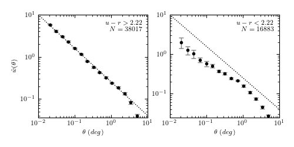

Angular Two-point Correlation Function¶
Figure 6.17
The two-point correlation function of SDSS spectroscopic galaxies in the range 0.08 < z < 0.12, with m < 17.7. This is the same sample for which the luminosity function is computed in figure 4.10. Errors are estimated using ten bootstrap samples. Dotted lines are added to guide the eye and correspond to a power law proportional to :math:` heta^{-0.8}`. Note that the red galaxies (left panel) are clustered more strongly than the blue galaxies (right panel).
{kind=link}
data size:
red gals: 38017
blue gals: 16883
@pickle_results: using precomputed results from 'correlation_functions.pkl'
# Author: Jake VanderPlas
# License: BSD
# The figure produced by this code is published in the textbook
# "Statistics, Data Mining, and Machine Learning in Astronomy" (2013)
# For more information, see http://astroML.github.com
# To report a bug or issue, use the following forum:
# https://groups.google.com/forum/#!forum/astroml-general
import numpy as np
from matplotlib import pyplot as plt
from astroML.decorators import pickle_results
from astroML.datasets import fetch_sdss_specgals
from astroML.correlation import bootstrap_two_point_angular
#----------------------------------------------------------------------
# This function adjusts matplotlib settings for a uniform feel in the textbook.
# Note that with usetex=True, fonts are rendered with LaTeX. This may
# result in an error if LaTeX is not installed on your system. In that case,
# you can set usetex to False.
from astroML.plotting import setup_text_plots
setup_text_plots(fontsize=8, usetex=True)
#------------------------------------------------------------
# Get data and do some quality cuts
data = fetch_sdss_specgals()
m_max = 17.7
# redshift and magnitude cuts
data = data[data['z'] > 0.08]
data = data[data['z'] < 0.12]
data = data[data['petroMag_r'] < m_max]
# RA/DEC cuts
RAmin, RAmax = 140, 220
DECmin, DECmax = 5, 45
data = data[data['ra'] < RAmax]
data = data[data['ra'] > RAmin]
data = data[data['dec'] < DECmax]
data = data[data['dec'] > DECmin]
ur = data['modelMag_u'] - data['modelMag_r']
flag_red = (ur > 2.22)
flag_blue = ~flag_red
data_red = data[flag_red]
data_blue = data[flag_blue]
print "data size:"
print " red gals: ", len(data_red)
print " blue gals:", len(data_blue)
#------------------------------------------------------------
# Set up correlation function computation
# This calculation takes a long time with the bootstrap resampling,
# so we'll save the results.
@pickle_results("correlation_functions.pkl")
def compute_results(Nbins=16, Nbootstraps=10, method='landy-szalay', rseed=0):
np.random.seed(rseed)
bins = 10 ** np.linspace(np.log10(1. / 60.), np.log10(6), 16)
results = [bins]
for D in [data_red, data_blue]:
results += bootstrap_two_point_angular(D['ra'],
D['dec'],
bins=bins,
method=method,
Nbootstraps=Nbootstraps)
return results
(bins, r_corr, r_corr_err, r_bootstraps,
b_corr, b_corr_err, b_bootstraps) = compute_results()
bin_centers = 0.5 * (bins[1:] + bins[:-1])
#------------------------------------------------------------
# Plot the results
corr = [r_corr, b_corr]
corr_err = [r_corr_err, b_corr_err]
bootstraps = [r_bootstraps, b_bootstraps]
labels = ['$u-r > 2.22$\n$N=%i$' % len(data_red),
'$u-r < 2.22$\n$N=%i$' % len(data_blue)]
fig = plt.figure(figsize=(5, 2.5))
fig.subplots_adjust(bottom=0.2, top=0.9,
left=0.13, right=0.95)
for i in range(2):
ax = fig.add_subplot(121 + i, xscale='log', yscale='log')
ax.errorbar(bin_centers, corr[i], corr_err[i],
fmt='.k', ecolor='gray', lw=1)
t = np.array([0.01, 10])
ax.plot(t, 10 * (t / 0.01) ** -0.8, ':k', linewidth=1)
ax.text(0.95, 0.95, labels[i],
ha='right', va='top', transform=ax.transAxes)
ax.set_xlabel(r'$\theta\ (deg)$')
if i == 0:
ax.set_ylabel(r'$\hat{w}(\theta)$')
plt.show()